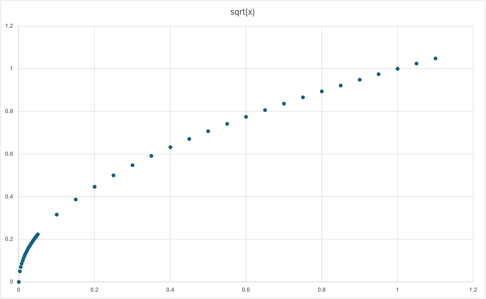

Another Election Year
Posted on
yep... we're back. not exactly transit policy related, but definitely public interest and public data related: we're seeing the election cycle turn once more.
agonizingly few journalists and pundits care to contextualize numbers related to polling data as they clumsily wield words like 'margin of error' to get you to shut your brain off and be scared.
so what is a margin of error?
a margin of error qualifies an estimate. for instance, if you took a poll and 52% of your respondents liked candidate A over candidate B (implying 48% prefer candidate B), then we would say there is a 4 point spread between candidates A and B (because: 52-49 = 4)
saying that said survey estimates have a margin of error of 3% means that we expect that in most circumstances (usually 95% of the time, i'll get into this later), candidate A's true polling number (if you surveyed every voting aged person in the country) would fall between 52 +/- 3% so 49%-55%.
the same would hold true for candidate B. We would expect their numbers to fall between 45% and 51%. These two ranges intersect, which means that the estimates themselves may be unreliable.
\( \text{margin of error} = z \times \sqrt{\frac{p \times (1 - p)}{n}} \)
where:
- \( z \) is the z-score corresponding to the desired confidence level,
- \( p \) is the sample proportion, and
- \( n \) is the sample size.
if this math scares you thats ok. i'm going to show you why it's harmless, and also a little silly.
first, i'll talk you through the z-part of the calculation briefly as it factors into the margin of error calculation in a very straightforward way.
statistics is built on an assumption that if you're taking an average of something but don't want to count it all out, you may choose to repetitively sample the phenomenon (eg. poll 600 ny residents about their election preferences) - and when you sample that phenomenon enough the results will take on the shape of a standard normal distribution (the bell-curve).
this bell curve has cool properties: you can use it to derive confidence intervals. at a 95% confidence level, z = 1.96, always. As we build out the rest of the calculation think about 1.96 as a baseline margin of error, which can either get larger if the quantity under the square root is > 1 or diminish if that quantity is less than 1, eg a decimal like 0.5.
\( \sqrt{\frac{p \times (1 - p)}{n}} \)
let's examine this expression from outside to inside. look at the square root of x as a function. when x is greater than 1/2,
when x > 1, the margin of error necessarily increases from 1.96%
and past a certain point less than 1, sqrt(x) becomes almost infinitesimally small, almost completely diminishing the effect of the 1.96% baseline.
now lets unpack what's going on inside the fraction. the top half is what happens when you multiply candidate A's percentage by candidate B's percentage. below please see an example of this, where i calculated (using the above formula) the margin of error for a sample of size n = 100, at a 95% confidence level for various margins of vote between candidates A & B.

interestingly enough, this shows that for a sample size of 100, the margin of error is unacceptably large unless the spread is strictly greater than 20 between the two candidates.
below, i show a similar chart, representing the effect of sample size (the denominator of our formula) on the margin of error of various vote shares of Candidate A.

the orange bars represent ranges of Candidate A's vote share, at a given sample size level, at which it would too close to definitively say the polls represent a lead on the part of Candidate A.
you may be asking yourself:hold up, hold up? does this margin of error factor in the proportion of the population that that sample represents? for instance, we ask 600 voters from ny state if they prefer candidate A or candidate B for president. does it matter what percentage of all new yorkers 600 voters represents?
well, it should, but it doesn't. the margin of error is just some math that tells you on the basis of a bell curve (standard normal distribution),how much error you have in your estimate based on the ratio how close a race is (the numerator) and the naked number of people you asked.
.